資料庫即時狀態：
ONLINE (Port 3306)
目前總訂單數：
4 筆工單
全廠待生產工件：
14 件
全廠已完工合格件：
25 件
即時產線良率：
92.6%
Port 80 服務衝突排查實驗機
Port 80 遭佔用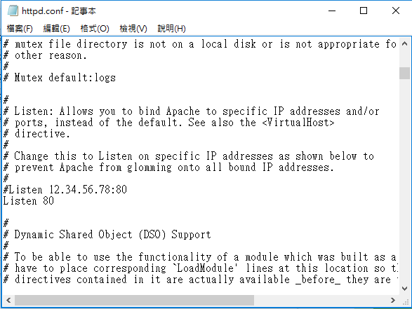
教材實務對照
Windows HTTP.SYS 或 IIS 搶佔 80 埠位，導致 Apache 無法正常啟動。
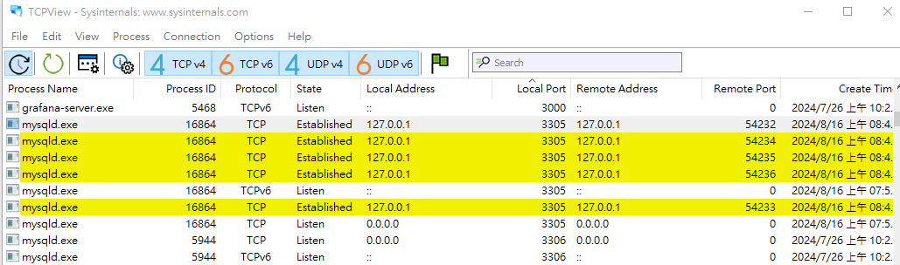
工具實證
透過 TCPView 或 netstat 快速抓出系統核心 (PID 4) 監聽 80 埠。
模擬 Windows 常見的 IIS、World Wide Web Publishing 服務 (PID 4) 佔用 Port 80 導致 Apache 無法啟動的情境。
[System] 正在檢測 0.0.0.0:80 埠位狀態...
[Conflict] 發現 PID 4 (System) 佔用 Port 80！Apache 啟動失敗 (Code 1)。
提示：請點擊上方「修改為 Port 8080」或「停止 IIS」進行一鍵修復。
php.ini 必要擴充套件切換
全數達標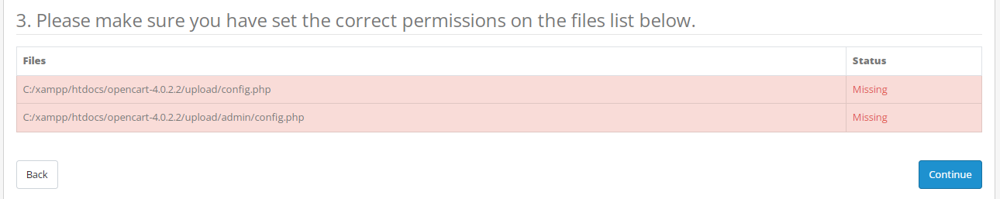
教材實務對照
移除 ;extension=gd、curl、zip 前方分號，賦予商城圖片縮圖能力。
OpenCart 4 需啟用 GD 繪圖庫、cURL 網路連線、ZIP 壓縮檔解壓縮與 MBString 多位元組字串。點選開關切換檢查：
所有必要擴充已就緒，可順暢安裝 OpenCart！
OpenCart 4-Step 虛擬安裝嚮導模擬
Step 1 of 4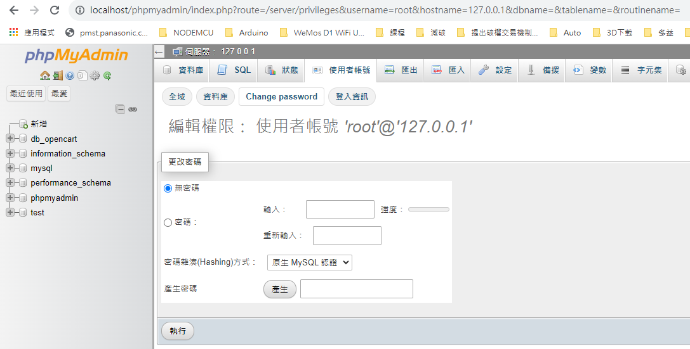
Step 1: License
GPL 授權協議確認，點擊 Continue 進入環境預檢。
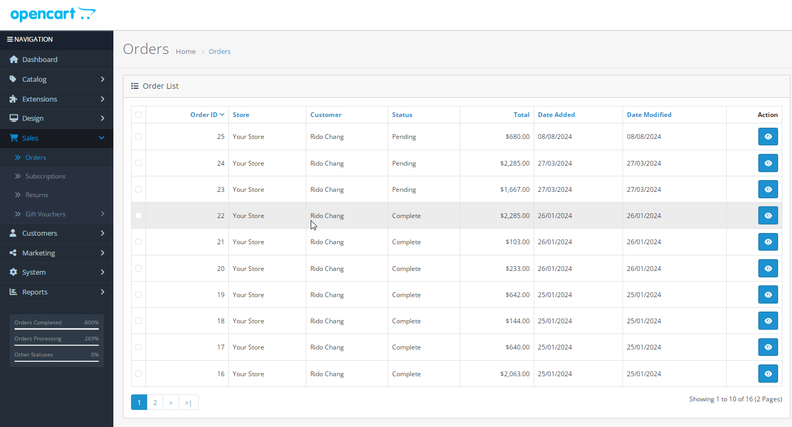
Step 2: Pre-Install
PHP 版本、GD 庫、CURL、ZIP 及設定檔可寫權限全數通過。
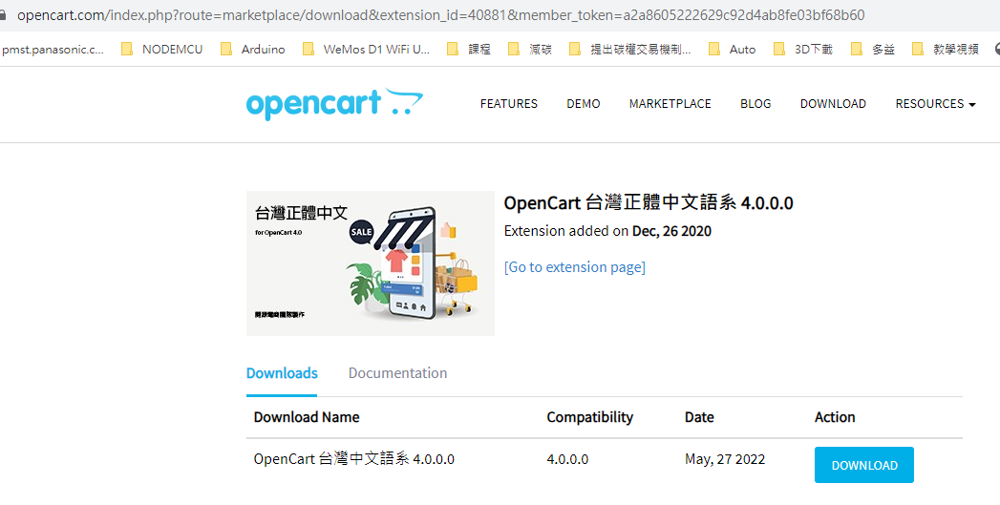
Step 3: Configuration
指向 MariaDB (3306)，填入 db_opencart 與管理員帳密。
請閱讀並接受 GNU GPL 授權合約
前台工件商城 (E-Commerce Store)
Ministry of Labor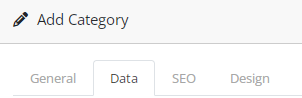
教材實務對照
後台建立「勞動部專題」頂層分類 (Top=1)，符合競賽命題規範。
模擬競賽指定之勞動部產品專區。現場挑選金屬或塑膠件，選取工件加工選項並加入購物車：
金屬工件 (Metal Part)
$49.00 USD
標準鋁合金工件
塑膠工件 (Plastic Part)
$89.00 USD
購物車清單與結帳下單 (Checkout)
0 件商品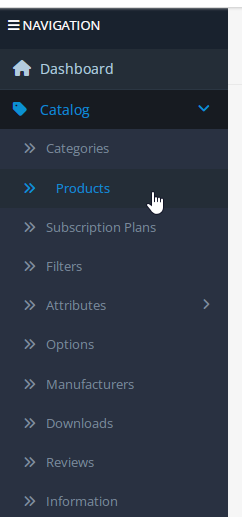
客製選項
設定單選下拉 Option，為後續智慧工廠排產提供加工依據。
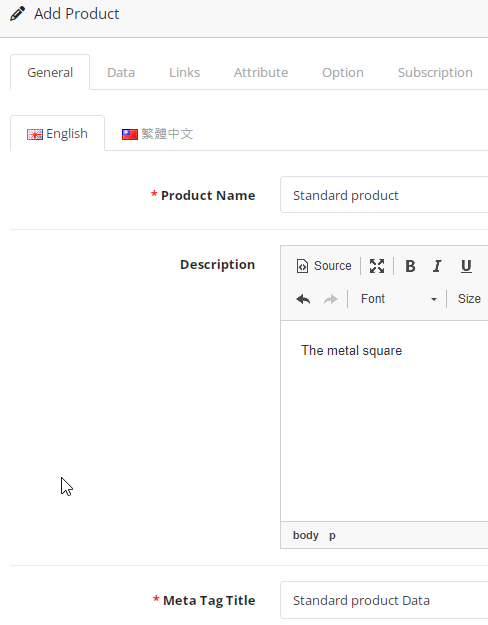
前台體驗
買家在前台挑選工件品項，指定數量與切削加工需求完成結帳。
購物車目前空空如也，請點選左側商品加入！
結帳含稅總計：
$0.00 USD
OpenCart 後台訂單即時鏡像 (oc_order)
雙向即時連動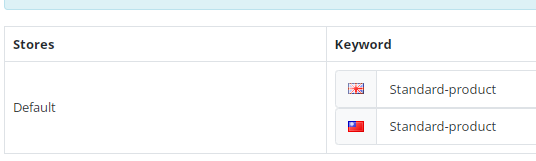
訂單管理
檢視 order_id、買家姓名、金額總計與訂單狀態 (Pending)。
| 訂單編號 (order_id) | 買家客戶 | 下單時間 | 總金額 | 訂單狀態 (order_status_id) | 製造作業建議 |
|---|
MariaDB / MySQL 精準查詢互動沙盒
phpMyAdmin Engine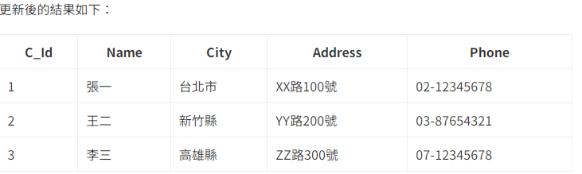
SQL 實測
SELECT order_id FROM oc_order，驗證索引與查詢效能。
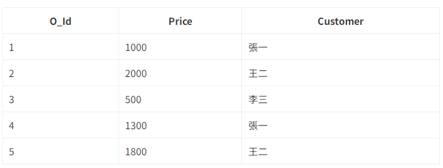
子查詢架構
先分組再加總，強制 AS subquery，徹底避免多表重複統計！
點擊下方任一預設 SQL 快捷鍵，或在編輯框中鍵入指令，模擬 phpMyAdmin 即時查詢 OpenCart 資料庫：
查詢耗時: 0.0012 秒 | 受影響行數: 4 rows
單元一：待產工單選擇 (Dropdown)
工單 #10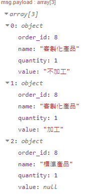
Node-RED 佈局
買家、總額、目前單號與動態下拉選單的 UI 欄位設計。
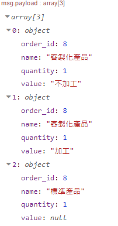
動態注入
透過 msg.options 將資料庫回傳的工單陣列即時注入 ui_dropdown。
透過 msg.options 動態生成的下拉選單。點選工單即時提取買家與加工規格：
買家姓名：林大明 (Lin Daming)
下單時間：2026-03-28 09:30:15
工件品名：塑膠工件 (Plastic Part)
下單數量：5 件
加工規格：Process (需切削加工)
當前狀態：Pending (待處理)
單元二&三：加急調度與 CNC 切削
待機 (Standby)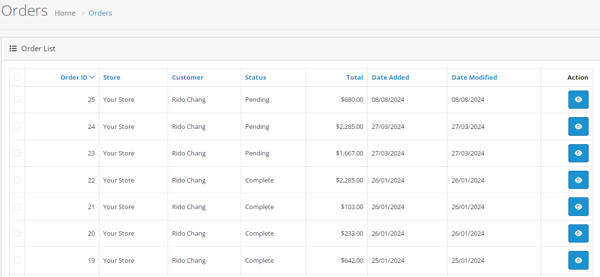
HTML 燈號
border-radius: 100% 打造真實工控 LED 燈，動態切換綠黃藍。
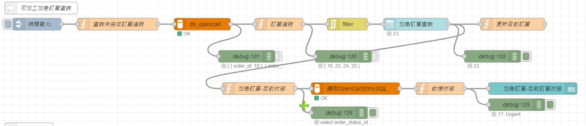
品質履歷
完工時自動將切削合格紀錄寫入 oc_order_history，完整產品溯源。
機台待機中 (Standby - 綠燈)
ui_template: border-radius: 100% 動態顏色綁定
CNC 切削計時進度
0%
單元四：全廠產能指標 (KPI) 與動態 Gauge 良率儀表板
SCADA Dashboard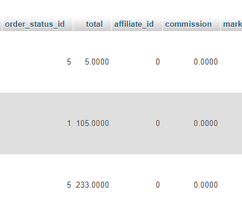
待產統計
分組消除 JOIN 膨脹，外層求和得出精確全廠待產工件總數。
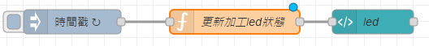
SCADA 儀表板
Yield Rate = (Complete / (Complete + Defect)) * 100%，圓形指針即時旋轉。
全廠待加工工件總數 (Pending)
兩階段巢狀查詢 (order_status_id < 5)
14 件
全廠已完工合格總數 (Complete)
兩階段巢狀查詢 (order_status_id = 5)
25 件
抽檢不良品件數 (Defects):
2 件
產線即時良率 (Yield Rate)
92.6%
品質優良 (Excellent)
公式: (完工合格數 / (完工合格數 + 不良數)) * 100%